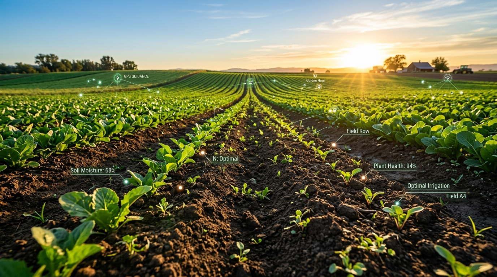

SoilSight helps farmers know the exact moisture level, soil classification, and health status of their fields in seconds. Simply upload a soil photo to detect Moisture, identify Soil Type, and rate Soil Health (Good / Moderate / Poor) with instant crop and irrigation recommendations.

Trained on thousands of real soil textures
Designed for farmers to get immediate actionable soil insights without expensive laboratory equipment.
Enter your name, farm location, acreage, and crops grown to set up your dedicated farmer profile.
Register Now →Log in with your credentials to open your personal dashboard showing your farm details and test history.
Go to Login →In your profile, click "Analyse Your Soil", upload a clear soil picture, and immediately receive moisture classification and irrigation advice.
Explore Dashboard →Maintaining the right moisture balance is critical for crop growth and water conservation.
Soil has cracked or powdery texture with minimal capillary water.
Dark, crumbly, and cohesive soil with ideal pore space for air and water.
Waterlogged or muddy soil with pore spaces completely filled with water.
Everything a farmer needs to make data-driven watering decisions.
Simply take a picture of your field topsoil with your smartphone and upload it directly into SoilSight.
Powered by a Convolutional Neural Network trained on soil datasets across diverse moisture gradations.
Every analysis is logged in your farmer profile so you can track soil moisture changes over time.
Receive clear irrigation steps tailored specifically to your soil's Dry, Moderate, or Wet status.